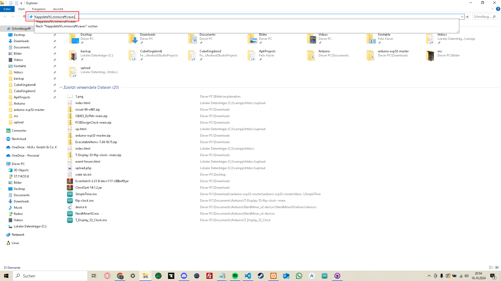
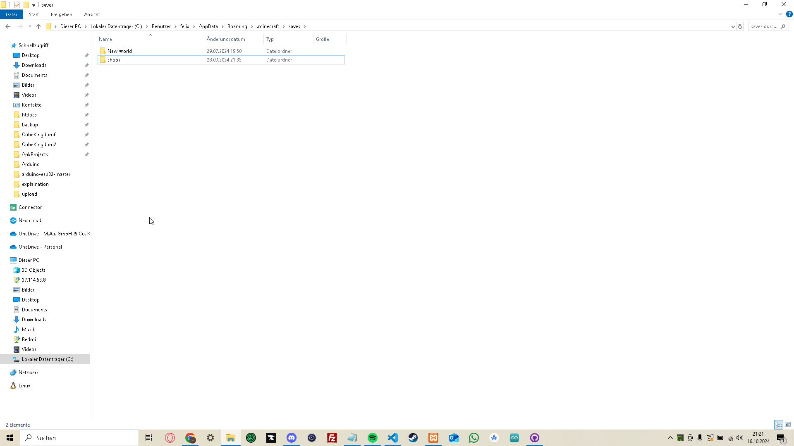

Klicke auf den Button, um den Ordnerpfad in deine Zwischenablage zu kopieren.
Öffne den Explorer mit der Tastenkombination "Windows + E".
Klicke in die Pfadleiste. Diese ist hier rot markiert:
Dann drücke die Tastenkombination "STRG + V". Danach sollte die Leiste in etwa so aussehen:
Drücke Enter. Daraufhin solltest du in einem Ordner sein, der in etwa so aussieht:
Hier kann die Anzahl der Ordner, die im Bild sind, von deiner Sicht abweichen. Jeder dieser Ordner hier steht für eine deiner Singleplayerwelten.
Finde den Ordner deiner Welt mit deinem Event-Vorschlag, indem du so lange auf "Änderungsdatum" klickst, bis der Pfeil darin exakt so aussieht wie der im Bild:
Jetzt markierst du den obersten Ordner und komprimierst ihn zu einer ZIP-Datei.
Solltest du nicht wissen, wie das geht, suche bitte im Internet danach, dort wirst du eine ausführliche Erklärung dazu finden.
Sobald du die ZIP-Datei hast, kopierst du sie bitte in deinen Download-Ordner, damit du sie beim Hochladen leichter findest.